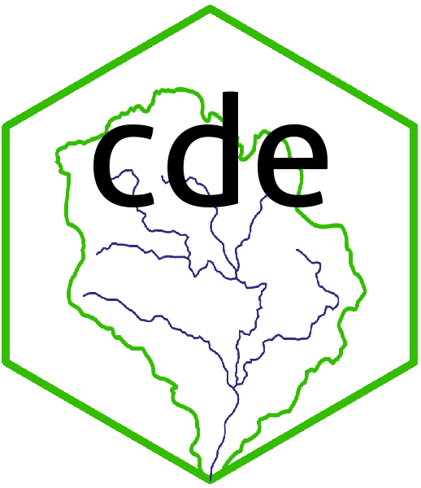

cde: Reference list of all output columns
Source:vignettes/cde-output-reference.Rmd
cde-output-reference.RmdThe table below gives information on all the current columns of data
retrieved by the different get_... functions of
cde; names, what they mean and which functions return them.
The EA do modify the format of their data from time to time, so this
will be updated as necessary.
| Column name | Description | Output from which functions |
|---|---|---|
| river_basin_district | Name of the River Basin District. This is the top level in the catchment hierarchy. | All get_… functions |
| management_catchment | Name of the Management Catchment, the next level down the hierarchy, see link above. | All get_… functions |
| operational_catchment | name of the Operational Catchment, the next level down from Management Catchments. | All get_… functions |
| waterbody_id | Waterbodies are the smallest unit in the catchment hierarchy, representing all or part of a river system, lake, estuary etc. Each has a unique ID (WBID). | All get_… functions |
| status | WFD status classification (High, Good, Moderate, Poor or Bad). For objectives this represents the target (aimed for) status class. | All get_… functions except get_pa |
| classification_item | Broad category of classification level (ecological, chemical or quantitative). | get_objectives, get_rnag & get_status |
| classification_level | The level within the range of classification elements that the status class refers to (see details here). | get_objectives, get_rnag & get_status |
| cycle | Which cycle of assessment the data come from. The first cycle. The
first cycle ran from 2009 to 2015 and cycle 2 to 2015-2021. There were
changes in some environmental standards between cycles and for a two
year period (2013-2014) where both assessment methods were employed,
cde only returns cycle 2 assessments. |
get_objectives, get_rnag & get_status |
| water_body | Name of the waterbody. | get_objectives, get_rnag & get_status |
| water_body_type | Type of waterbody. Values are: River, Lake, CoastalWater, TransitionalWater, GroundWaterBody | get_objectives, get_rnag & get_status |
| year | Year to which the data refer to. | get_objectives, get_rnag & get_status |
| easting | British National Grid Reference easting, i.e. x coordinate of location. | get_objectives & get_status |
| hydromorphological_designation | Hydromorphological designation of the waterbody (e.g. whether the body is artificial or heavily modified). | get_objectives & get_status |
| ngr | Ordnance Survey Landranger grid reference of the location. | get_objectives & get_status |
| northing | British National Grid Reference northing, i.e. y coordinate of location. | get_objectives & get_status |
| activity | Classification of the activity linked to the RNAG identified, for example “Forestry”, “Septic Tanks”. | get_rnag |
| activity_certainty | Categorical assessment of the certainty with which the RNAG identified is linked to the activity specifed. | get_rnag |
| business_sector | Categorisation of the business sector linked to the activity causing the RNAG, for example “Transport”, “Retail sector”, “Forestry”. | get_rnag |
| category | Broad categorisation of the RNAG, for example “Industry”, “Agriculture and rural land management” or “Water Industry”. | get_rnag |
| category_certainty | Categorical assessment of the certainty with which the RNAG identified is linked to the category specifed. | get_rnag |
| certainty | Categorical assessment of the certainty of the status class assignment. | get_status |
| classification_element | Specific quality element or metric linked to the RNAG. | get_rnag |
| confidence | Confidence in the status class assignment (0-1 scale). | get_status |
| estimated_start_date | Estimated date at which measure specified will begin. | get_measures |
| funding_stream | Source of funding for measure specified. | get_measures |
| id | Unique numerical code of RNAG (may be linked to measures specified). | get_rnag |
| investigation_outcome | Outcome of the investigation into the RNAG. | get_rnag |
| lead_organisation | Organisation leading the work on the measure specified. | get_measures |
| linked_rnags | Numerical code(s) of RNAGS linked to measures specified (see ‘id’ above). | get_measures |
| measure_category_1 | Top level classification of measure specified. | get_measures |
| measure_category_2 | Next level down (more detailed) classification of measure specified. | get_measures |
| measure_category_3 | Most detailed classification of measure specified. | get_measures |
| measure_reference_code | Numerical code of measure type. | get_measures |
| measure_type | Classification of type of measure employed. | get_measures |
| national_swmi_header | SWMI (Significant Water Management Issue) classification at the national level, for example “Pollution from waste water” or “Physical modifications”. | get_rnag |
| objectivetype | Type of objective set, either “Predicted” or “Objective” | get_objectives |
| pressure_tier_1 | Detailed classification of the pressure related to the RNAG identified, for example “Irrigation”, “Priority Substances (pesticides)”. | get_rnag |
| pressure_tier_2 | Specific substance or pressure associated with RNAG identiifed, for example “Phosphate”, “High temperature”. | get_rnag |
| pressure_tier_3 | High level classification of the pressure related to the RNAG identifed, for example “Physical modification”, “Dissolved oxygen (DO)”. | get_rnag |
| protected_area_code | Unique code of each protected area. | get_pa |
| protected_area_label | Name or code of protected area. | get_pa |
| protected_area_type | Designation of protected area, for example “Nitrates Directive” , “Bathing Water Directive”. | get_pa |
| reason_type | Type of RNAG, either “RFF” - reason for failure or “RFD” - reason for deterioration. | get_rnag |
| reasons_for_alternative_objectives | Detailed text as to why alternative objectives i.e. a status less than good, have been set. | get_objectives |
| rnag_url | URL to page on CDE site giving specifics of RNAG. | get_rnag |
| sector_of_lead_organisation | Sectoral classification of organisation leading measures work. | get_measures |
| see_also | Additional details about the protected area specified. | get_pa |
| swmi | SWMI (Significant Water Management Issue) classification of the RNAG, for example “Diffuse source”, “Invasive non-native species”. | get_rnag |
| swmi_certainty | Categorical assessment of the certainy with which the RNAG is linked to the SWMI classification specified. | get_rnag |
| title | Title of the measures project specified. | get_measures |